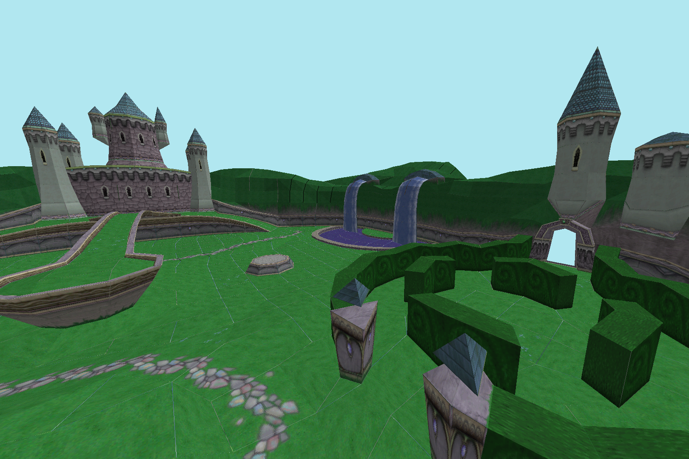
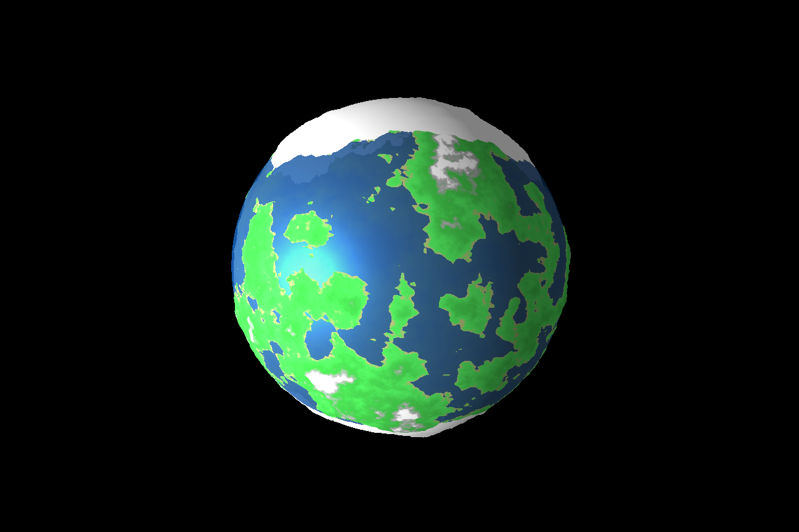

Ben Phillips - Official Website
| Home | About Me | My Projects | Demos | Game Devblog | Music Stuff |
|---|
Demos
Fractal Explorer


This JavaScript app renders views of the mandelbrot fractal. Progress is shown as animation of the area being filled in as the boundaries of the fractal become more detailed. The spacebar centers the view on the mouse cursor, while up and down arrows change the zoom level by a factor of 2x. A julia fractal corresponding to a certain point in the complex plane can also be viewed by selecting the point with the mouse cursor and pressing J. The M key returns to the mandelbrot view.
3D Software Renderer
Pure JavaScript implementation of a standard 3D graphics pipeline that would normally occur within a GPU. The demo includes a scene mesh and texture from an old PS1 Spyro game. Because this relies entirely on JS processing and HTML canvas calls for drawing individual pixels, only 1-4 frames per second is expected.
This project includes perspective projection, mesh processing, polygon clipping, depth-buffering, lighting, and texture sampling with perspective-accurate UV mapping.
Befunge Interpreter
Editor and runtime environment for the Befunge esoteric programming language. This language uses treats text files as a 2D grid of single-character instructions, and control flow is achieved by changing the direction that the "execution head" moves. The editor supports the entire Befunge-93 language spec, which is described on the Wikipedia page. Saving and loading is not directly supported, but the user can easily copy-paste their program to a local text file and back.
Globe Generator
An earth-like globe is procedurally generated each time the page loads. This is done by generating a heightmap from a sperical slice of fractal Perlin noise, then building a mesh and colorizing a texture based on the heightmap information. Rendering uses WebGL, but the generator does not, so this demo takes several moments to load.